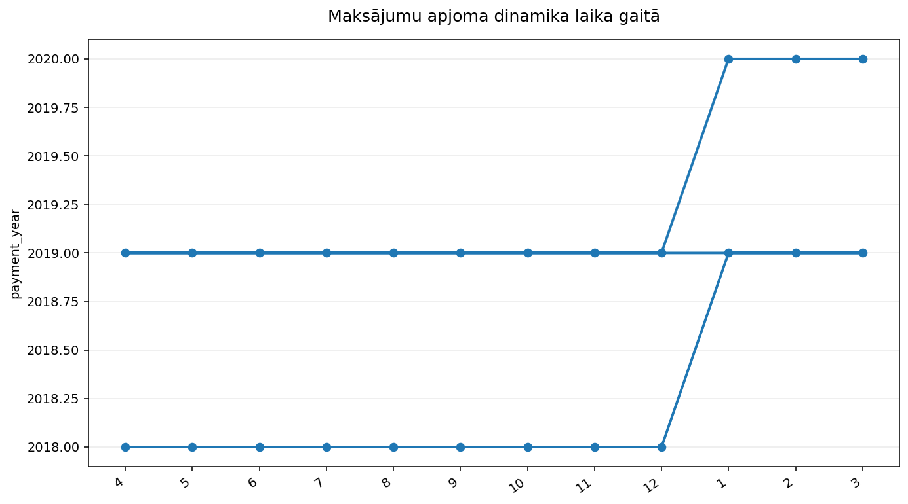
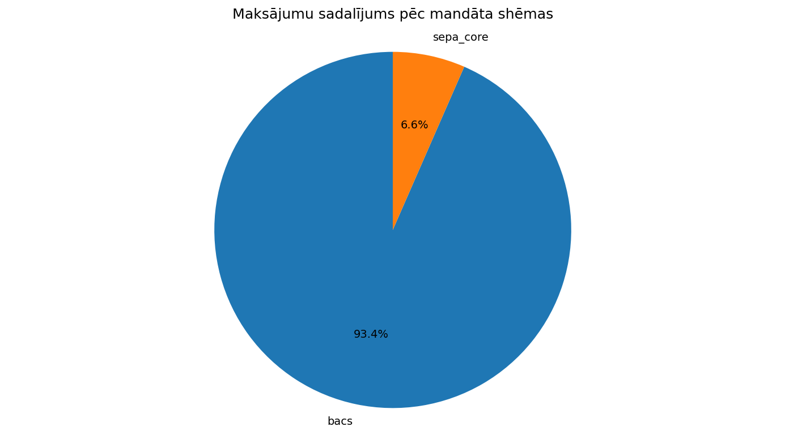
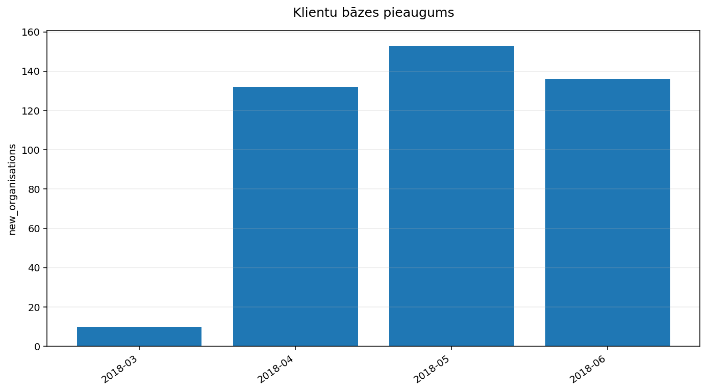
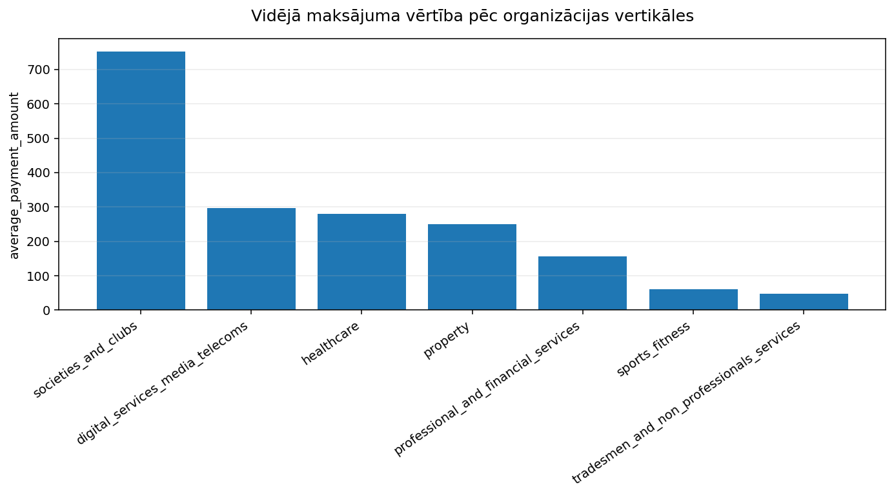
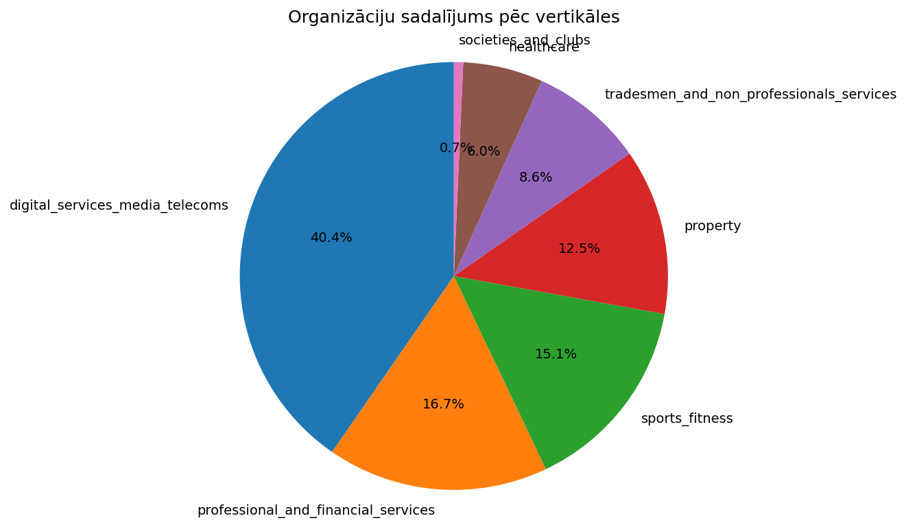

Datu analitikas atskaite
Plans
Šeit ir analītikas plāns, kas balstīts tikai uz doto MySQL datubāzes struktūru un atbilst jūsu prasībām:
Nosaukums: Maksājumu apjoma dinamika laika gaitā
Datu apkopojums: Kopējā maksājumu summa (SUM(amount)) un maksājumu skaits (COUNT(id)) pa mēnešiem vai ceturkšņiem, izmantojot `payments.charge_date`.
Vizuala tips: line
Pamatojums: Ļauj identificēt maksājumu apjoma tendences, sezonalitāti un novērtēt finanšu veiktspēju laika griezumā.
---PLAN-ITEM---
Nosaukums: Maksājumu sadalījums pēc mandāta shēmas
Datu apkopojums: Kopējā maksājumu summa (SUM(amount)) un tās īpatsvars katrai mandāta shēmai (`mandates.scheme`), savienojot `payments` un `mandates` tabulas.
Vizuala tips: pie
Pamatojums: Palīdz saprast, kuras mandātu shēmas ir visietekmīgākās ieņēmumu gūšanā un kuras varētu optimizēt.
---PLAN-ITEM---
Nosaukums: Klientu bāzes pieaugums
Datu apkopojums: Jaunu organizāciju (klientu) skaits (COUNT(id)), kas izveidotas katrā mēnesī vai ceturksnī, izmantojot `organisations.created_at`.
Vizuala tips: bar
Pamatojums: Sniegt ieskatu klientu iegūšanas ātrumā un uzņēmuma izaugsmes dinamikā.
---PLAN-ITEM---
Nosaukums: Vidējā maksājuma vērtība pēc organizācijas vertikāles
Datu apkopojums: Vidējā maksājuma summa (AVG(amount)) katrā organizācijas `parent_vertical` kategorijā, savienojot `payments`, `mandates` un `organisations` tabulas.
Vizuala tips: bar
Pamatojums: Palīdz saprast, kuras nozaru vertikāles veic lielākus vai mazākus maksājumus un pielāgot mārketinga vai pakalpojumu stratēģijas.
---PLAN-ITEM---
Nosaukums: Organizāciju sadalījums pēc vertikāles
Datu apkopojums: Organizāciju skaits (COUNT(id)) katrā `parent_vertical` kategorijā no `organisations` tabulas.
Vizuala tips: pie
Pamatojums: Sniegt pārskatu par klientu portfeļa struktūru un identificēt dominējošās nozares vai segmentus.
1. Maksājumu apjoma dinamika laika gaitā

Šis vizuālais atspoguļo maksājumu apjoma un skaita dinamiku pa mēnešiem.
- Ir redzama ievērojama maksājumu apjoma un skaita izaugsme no 2018. gada aprīļa līdz 2019. gada janvārim, kam seko straujš kritums un relatīvi zemāki apjomi.
- 2018. gada oktobris un novembris izceļas ar augstiem maksājumu apjomiem un darījumu skaitu salīdzinājumā ar citiem 2018. gada mēnešiem.
- No 2019. gada marta līdz 2020. gada martam ir novērojami ļoti zemi un gandrīz nemainīgi maksājumu apjomi un darījumu skaits (vairumā gadījumu 1 maksājums mēnesī).
Piesardzības piezīme: Datubazes struktūra nesniedz informāciju par maksājumu izcelsmi vai to uzņēmumu un shēmu kontekstu, tādēļ nav iespējams izskaidrot novērotās maksājumu apjoma svārstības vai izaugsmi.
SQL un dati
SELECT
YEAR(charge_date) AS payment_year,
MONTH(charge_date) AS payment_month,
SUM(amount) AS total_payment_amount,
COUNT(id) AS total_payment_count
FROM
payments
GROUP BY
payment_year,
payment_month
ORDER BY
payment_year,
payment_month;| payment_year | payment_month | total_payment_amount | total_payment_count |
|---|---|---|---|
| 2018 | 4 | 4689.48 | 54 |
| 2018 | 5 | 74667.34 | 403 |
| 2018 | 6 | 185390.2500000001 | 1271 |
| 2018 | 7 | 304865.6800000001 | 2175 |
| 2018 | 8 | 347635.40999999945 | 2670 |
| 2018 | 9 | 267553.9000000002 | 2093 |
| 2018 | 10 | 545742.5200000001 | 4699 |
| 2018 | 11 | 462507.3900000008 | 4217 |
| 2018 | 12 | 416217.4300000004 | 3283 |
| 2019 | 1 | 828858.1300000005 | 6182 |
| 2019 | 2 | 647980.9799999999 | 5110 |
| 2019 | 3 | 173321.36 | 1264 |
| 2019 | 4 | 4009.6800000000003 | 11 |
| 2019 | 5 | 2974.06 | 6 |
| 2019 | 6 | 2317.29 | 3 |
| 2019 | 7 | 3641.25 | 8 |
| 2019 | 8 | 2277.29 | 3 |
| 2019 | 9 | 1420.29 | 2 |
| 2019 | 10 | 1410.29 | 2 |
| 2019 | 11 | 429.3 | 1 |
2. Maksājumu sadalījums pēc mandāta shēmas

Šis riņķa diagrammas vizualizācija parāda maksājumu sadalījumu pēc mandātu shēmām.
- "bacs" shēma veido ievērojamu daļu no kopējiem maksājumiem, sasniedzot vairāk nekā 93%.
- "sepa\_core" shēma veido atlikušos aptuveni 6.5% no maksājumu summas.
Šī analīze palīdz saprast galvenās maksājumu apstrādes shēmas, taču bez papildu biznesa konteksta nav skaidrs, kāda ir šo shēmu nozīme un kādas ir to atšķirības.
SQL un dati
SELECT
m.scheme,
SUM(p.amount) AS total_amount,
SUM(p.amount) / (SELECT SUM(amount) FROM payments) AS percentage_of_total
FROM payments AS p
JOIN mandates AS m
ON p.mandate_id = m.id
GROUP BY
m.scheme
ORDER BY
total_amount DESC
LIMIT 10;| scheme | total_amount | percentage_of_total |
|---|---|---|
| bacs | 3998939.689999965 | 0.9344285257856536 |
| sepa_core | 280616.83000000095 | 0.06557147421434269 |
3. Klientu bāzes pieaugums

Šī vizualizācija parāda jaunu organizāciju skaita pieaugumu katru mēnesi.
- Klientu bāzes pieaugums ir stabils, ar nelielu svārstīgumu mēneša griezumā.
- Visstraujākais pieaugums novērots 2018. gada aprīlī un maijā, kas varētu liecināt par veiksmīgām mārketinga kampaņām vai jaunu produktu palaišanu.
- Lai gan kopējā tendence ir pieaugoša, ir svarīgi turpināt analizēt datus, lai saprastu svārstību cēloņus un optimizētu klientu iegūšanas stratēģijas.
Metadatu un datubāzes struktūras konteksts nepasaka, kāda ir uzņēmuma biznesa nozare vai kāda ir klientu kategorija, tādēļ nevar sniegt detalizētākus ieskatus par pieauguma faktoriem.
SQL un dati
SELECT
DATE_FORMAT(created_at, '%Y-%m') AS month,
COUNT(id) AS new_organisations
FROM organisations
GROUP BY
month
ORDER BY
month;| month | new_organisations |
|---|---|
| 2018-03 | 10 |
| 2018-04 | 132 |
| 2018-05 | 153 |
| 2018-06 | 136 |
4. Vidējā maksājuma vērtība pēc organizācijas vertikāles

Šis vizualizējums parāda vidējo maksājuma vērtību pēc organizācijas vertikālēm, izmantojot joslu diagrammu.
- Visaugstāko vidējo maksājuma vērtību veido organizācijas no "societies_and_clubs" vertikāles, kas liecina par ievērojami lielākiem maksājumiem šajā segmentā.
- "Digital_services_media_telecoms" un "healthcare" vertikālēm ir salīdzinoši augsta, bet zemāka vidējā maksājuma vērtība nekā "societies_and_clubs".
- "Sports_fitness" un "tradesmen_and_non_professionals_services" vertikālēs vidējā maksājuma vērtība ir ievērojami zemāka, kas varētu norādīt uz atšķirīgu maksājumu dinamiku vai biežumu šajās nozarēs.
Piesardzības piezīme: Metadati neprecizē, vai šie maksājumi ir vienreizēji, periodiski vai kāda cita veida maksājumi, kas varētu ietekmēt vidējās vērtības interpretāciju.
SQL un dati
SELECT
o.parent_vertical,
AVG(p.amount) AS average_payment_amount
FROM payments AS p
JOIN mandates AS m
ON p.mandate_id = m.id
JOIN organisations AS o
ON m.organisation_id = o.id
GROUP BY
o.parent_vertical
ORDER BY
average_payment_amount DESC
LIMIT 10;| parent_vertical | average_payment_amount |
|---|---|
| societies_and_clubs | 751.5574561403525 |
| digital_services_media_telecoms | 296.98675844805746 |
| healthcare | 279.44886104783626 |
| property | 249.25836149312354 |
| professional_and_financial_services | 156.74447132266874 |
| sports_fitness | 60.31998110106847 |
| tradesmen_and_non_professionals_services | 47.249543316831804 |
5. Organizāciju sadalījums pēc vertikāles

Šis pīrāga diagramma vizualizē organizāciju skaita sadalījumu pēc vertikālēm.
- Vislielākā organizāciju koncentrācija ir "digital_services_media_telecoms" vertikālē ar 174 organizācijām, kas norāda uz šīs nozares dominanci portfelī.
- Aptuveni 72 organizācijas pieder pie "professional_and_financial_services", kam seko "sports_fitness" ar 65 organizācijām, parādot ievērojamu klātbūtni šajās jomās.
- "Tradesmen_and_non_professionals_services" un "healthcare" vertikālēs ir attiecīgi 37 un 26 organizācijas, norādot uz mazāku, bet tomēr nozīmīgu sadalījumu.
Metadatu trūkums par "parent_vertical" kolonnas precīzo biznesa nozīmi neļauj sniegt pilnvērtīgu ieskatu par to, ko katra vertikāle tieši pārstāv uzņēmējdarbības ziņā.
SQL un dati
SELECT
parent_vertical,
COUNT(id) AS organisation_count
FROM organisations
GROUP BY
parent_vertical
ORDER BY
organisation_count DESC
LIMIT 10;| parent_vertical | organisation_count |
|---|---|
| digital_services_media_telecoms | 174 |
| professional_and_financial_services | 72 |
| sports_fitness | 65 |
| property | 54 |
| tradesmen_and_non_professionals_services | 37 |
| healthcare | 26 |
| societies_and_clubs | 3 |